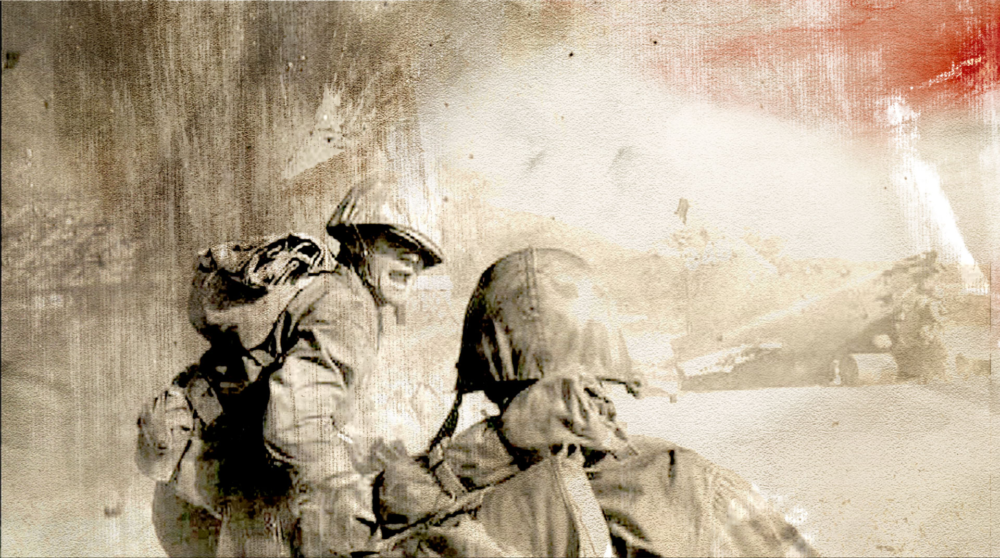
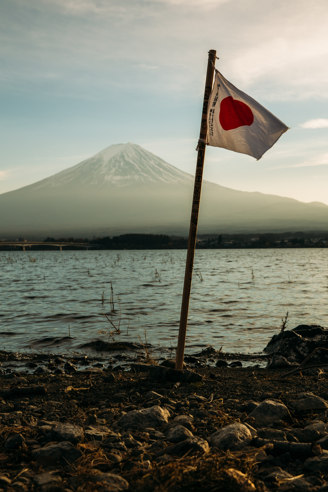
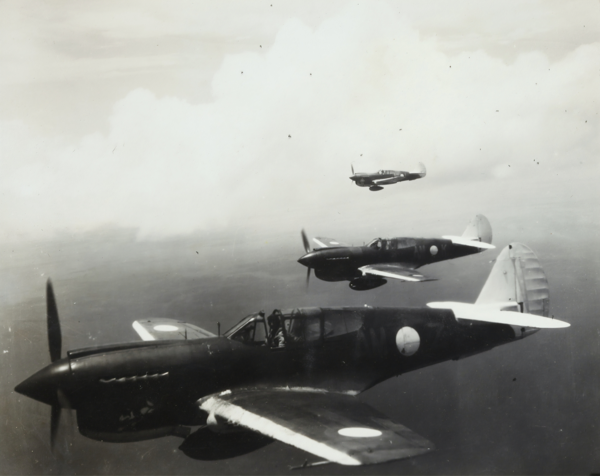

Bienvenido a la página de INICIO sobre una de las mejores series bélicas. "The pacific" es una serie, un relato épico de sacrificio y determinación, 'The Pacific' es una obra maestra de la televisión que honra a aquellos que sirvieron en el frente del Pacífico, japoneses contra estadounidenses, durante la Segunda Guerra Mundial.


Japón buscaba expandir su imperio y adquirir nuevos territorios. Esta expansión fue motivada por la búsqueda de recursos naturales, como petróleo, minerales y materias primas, que eran necesarios para mantener su crecimiento económico e industrial.

El ataque a Pearl Harbor fue percibido como una provocación directa y un acto de guerra por parte de Japón contra Estados Unidos. El presidente de Estados Unidos en ese momento, Franklin D. Roosevelt, lo describió como "un día que vivirá en la infamia" en su discurso al Congreso, lo que llevó a una respuesta inmediata, entrando Estados Unidos, en la Segunda Guerra Mundial.